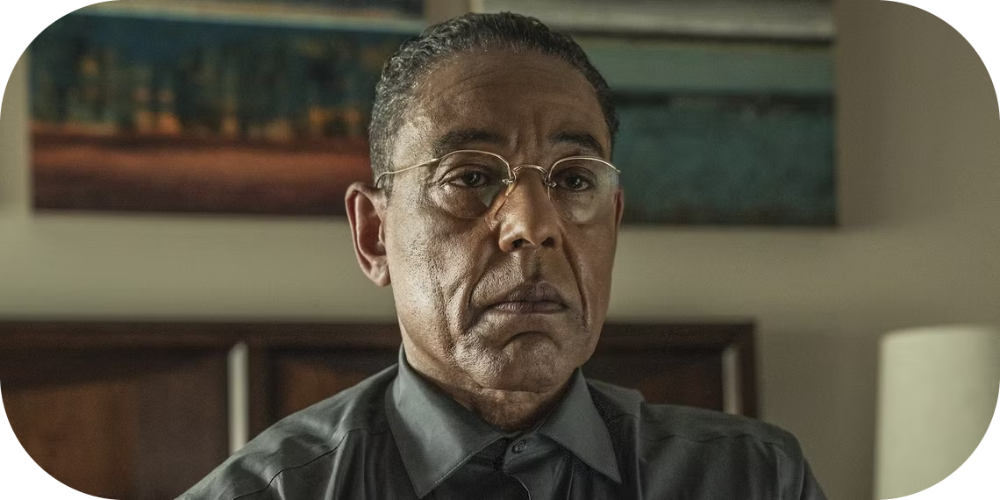

Gustavo Fring
Gustavo "Gus" Fring, interpretado por Giancarlo Esposito, é um dos antagonistas mais enigmáticos e meticulosos de Breaking Bad. Ele é apresentado como o respeitável proprietário da cadeia de fast-food "Los Pollos Hermanos", mas por trás dessa fachada, Gus é um dos mais poderosos e calculistas traficantes de drogas do sudoeste dos Estados Unidos.
Gus construiu um império com base em eficiência, disciplina e discrição. Ele opera uma sofisticada rede de distribuição de metanfetamina, utilizando seus restaurantes como cobertura para suas atividades ilegais. Extremamente cauteloso, ele mantém uma imagem pública impecável, até mesmo colaborando com instituições de caridade e autoridades locais, o que dificulta sua identificação como criminoso.
A história de Gus é marcada por vingança e ambição. Durante Breaking Bad, é revelado que ele busca destruir o cartel mexicano liderado por Don Eladio, devido a eventos traumáticos em seu passado, incluindo a execução de seu parceiro de negócios e amigo próximo, Maximino Arciniega. Esse desejo de vingança molda muitas de suas decisões e demonstra sua paciência implacável para alcançar seus objetivos.
Gus é tanto um mentor quanto um inimigo mortal para Walter White. Reconhecendo o talento de Walter para produzir metanfetamina de alta pureza, Gus o recruta, mas a relação entre os dois rapidamente se torna tensa devido à crescente arrogância e imprevisibilidade de Walter. Esse conflito culmina em uma batalha de inteligência e manipulação, que resulta em uma das cenas mais memoráveis da série.
Além de Breaking Bad, a série Better Call Saul explora ainda mais a história de Gus, mostrando como ele consolidou seu poder e desenvolveu suas relações com personagens como Mike Ehrmantraut e Hector Salamanca. Esses eventos ajudam a entender melhor a complexidade de sua personalidade e as raízes de sua rivalidade com o cartel.
Gus Fring é um vilão notável pela sua calma inquietante, inteligência afiada e capacidade de esconder sua verdadeira natureza por trás de uma máscara de cordialidade. Giancarlo Esposito recebeu ampla aclamação por sua interpretação, que equilibra precisão e intensidade, transformando Gus em um dos personagens mais fascinantes e icônicos do universo de Breaking Bad.